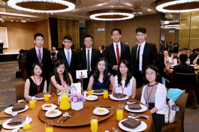
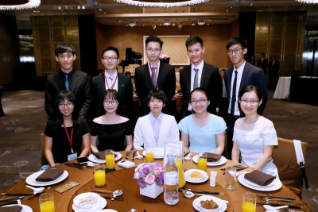
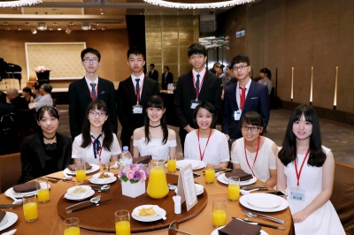
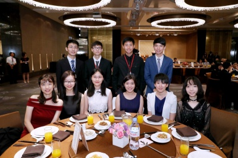
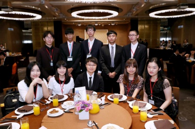
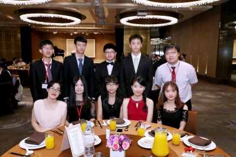

尹衍梁先生
尹衍樑總裁為臺灣大學商學碩士、政治大學企業管理博士。目前擔任潤泰集團總裁、中國文化大學董事會董事，也是北大和臺大的名譽博士及兼任教授。始終秉持「對企業的經營是責任、對工程機械的專研是興趣，對社會的關懷是感恩回饋，對教育的關懷是民族使命」的信念。1978年榮獲台灣傑出青年紡織工程師獎，2005年獲得中華民國創作發明之個人創作發明獎金牌。2001年起，以研發長身分帶領營建事業單位投入創新研發，個人專利件數累積逾200件，數量甚超過台灣地區整體營建公司總和。
尹總裁也在慈善事業不遺餘力，曾被富士比雜誌表揚為「亞州行善英雄榜」的代表人物，亦多年投身教育。2014年頒發的唐獎承襲中華文化數千年涵養，從永續發展、生技醫藥、漢學及法治四大領域中，不分種族國籍遴選對世界有實質貢獻的研究者，勉勵時代先驅以其學易天下，並以天下為己任，共同為世界文明努力。
過去數年，潤泰集團先後設立財團法人紀念尹珣若先生教育基金會、財團法人尹書田紀念醫院、光華教育基金會、光華科技基金會、北京大學光華管理學院及光華工程科技獎等服務兩岸人民，並積極為國家培育人才。此外秉持對社會和晚進後輩的關懷，和教育大計的前瞻，尹總裁多年來經由財團法人紀念尹珣若先生教育基金會發起並全額贊助此交流營，其積極作育英才之心令人敬仰與感佩。
第一組感謝信
敬愛的尹總裁：
感謝您這十六年間持續的推動狀元營的舉辦，狀元營帶給我們的，不是外人表面看來的十四天遊樂，而是一個結交臺大北大摯友、增廣視野與遠見的平台。透過親身走訪臺灣與中國，我們對兩岸文化風情的了解，無須透過任何媒介的塑造，而是以自身的感受，深刻且直接的去看待一切的人、事、物。
對於這次的狀元營，最大的收穫非人莫屬了。我們在大學尚未踏入職場的階段相遇，因此能以相對單純、開放而自在的心態，去結識未來能一同努力抑或相互競爭學習的夥伴。在最單純的學生時期遇見的這群人，無論未來發展如何，都會因為是在最純粹美好的年華相遇，而不太會有雜質來沾染情感的純粹。謝謝尹總裁的先知灼見，讓60個來自兩岸優秀可愛的學生，能在這樣的條件下相遇相知，相信未來也都能帶著這份美好，無論良性競爭也好，良性合作也罷，基於對於彼此的了解、消弭的成見，能以健康的心態繼續在人生的道路上並行著。
再次感謝尹總裁，給了我們參與狀元營的機會。如果不是狀元營，我們不可能結識這群來自北大的優秀同儕，更不可能在這個夏天結交到一群能交換想法、分享日常的朋友。在這14天的交流裡，我們零隔閡的用真心了解彼此的相同與不同，也在彼此的身上看見那份義無反顧的衝勁，看見了每個人的心中，那顆蘊含著夢想和企圖心的種子已然悄悄萌芽、日益茁壯。狀元營不但讓我們在這個夏天，結識一群一見如故的摯友，也讓我們激勵自己，在往後的日子裡，永遠都有許多值得我們去準備去學習的地方，也要努力提升自己，才能和這60位好友一同打拚，這樣的啟發與感動，我們會永遠記得。
也願我們，永遠記得今年夏天的初心，和這一輩子的牽絆。
第二組感謝信
敬愛的尹衍樑總裁，您好：
狀元營對我們來說就像一場美夢，十四天的旅程雖短暫，卻足以釀造出一段美好又長久的友情，大家從陌生到熟悉，最後淚眼相送，相互約定未來必會相見。感謝您願意支持狀元營已經有十六年了，或許對您來說僅是舉手之勞，但對於我們，這個活動別具意義。
過去的中國印象總是停留在課業或是新聞上的知識性記憶，即使去中國旅遊，也難有機會與相近年齡層的同學們接觸。狀元營於我們是個契機，和這三十位北大的同學相處之後，一切都變得那麼真實，從兩岸不同的文化內容，到後來開始交流彼此不同的方言，並開始認識彼此的背景，我們不談學術，但我們深入了解彼此。我們從狼人遊戲，看見他們如何在日常生活中訓練邏輯與辯論的能力，也從他們之間的談天，看見他們接受學校教育下對個人的影響，感謝您搭起這座交流的橋樑，讓我們得以見賢思齊，見不賢而內自省，並在互相學習彼此優點的同時，也積極思考哪些資源與環境是台灣所欠缺的。
本屆狀元營的總裁晚宴，非常榮幸能見到總裁本人，雖僅是一面之緣，但我們內心都明瞭：沒有您，就沒有狀元營，就不可能有這六十位同學的相遇。在典雅的琴聲音樂，玻璃杯敲擊之際，正裝與禮服下掩蓋的是我們仍有些懵懂而單純的心靈，與許多的長官、老師們敬酒，換來的是師長們賦予的許多期望，字字句句鑲嵌在心中，使我們堅信，自己應該更加的不凡，也同時需要承擔起更大的社會責任。我們始終明白，今日所享有的成就與資源，來自您，來自台大，來自政府，來自廣大人民。由衷感謝您偉大慷慨的投資，同時成為我們的典範，受您庇蔭的我們也必定在未來將助人的熱情如聖火傳遞下去，在有能力製造機會時，讓更多人受到幫助，進而幫助更多人。
短短的十四天中，我們與對岸同學一同暢遊台灣小島，走訪中國名勝古蹟，彩繪彼此的人生畫布，留下燦爛的色彩，使繽紛的記憶永存。謝謝尹總裁，讓我們在夢醒後對自己的目標更加確立，誓言要成為社會的中流砥柱，終像您一樣回饋於社會。
第三組感謝信
敬愛的尹衍樑總裁．您好：
回想起這段旅程，忍不住讚嘆起緣分的巧妙，或許正確來說，是您的奉獻，讓我們的緣分得以牽起這個營隊。一邊是台灣大學管理學院、一邊是北京大學光華管理學院，原本沒有任何關聯的我們，很幸運的在這延續15年的優良活動中取得了一絲聯繫。正多虧您給我們的一絲聯繫，給我們共同參加活動的機會，讓我們得以去擴大彼此的關係，從陌生人到夥伴，從夥伴到朋友，這過程中，我們對您充滿感謝。
活動中我們要感謝的人太多了，與會的老師、教授和一起努力籌備的夥伴們，每個人各司其職，無論少了誰，這個營隊都會變得黯淡甚至無法成行，而在其中一個非常重要的人，就是尹總裁您了。若不是您有著回饋的善意以及對於交流的遠見，根本不會有狀元營的產生，到我們為止第16屆，可以傳承這麼多年，更證明了這個活動的成功以及前瞻性。
除了感謝的話語，一路上的成長，我們也想讓您共同見證。雖然我們不敢說自己在過程中真的成長了多少，但是獲得了很多這是可以肯定的，這些獲得的東西都是讓我們可以成長的養分及動力。在台灣的環島一周、在北京及哈爾濱的聖的巡禮，不只充實我們的見識，也讓旅程中小組成員們一起行動，感情變的更加深厚；讀書分享會，除了自己準備的報告之外，也聽了各組精彩的解說，北大同學們切入的觀點和我們有些許差異，這種不同地區的觀點相當有趣也讓我們有更大的討論空間；晚會各種類型的表演，除了能展現每個人的特色之外，也能夠看見大家的努力，當然每個人都有參與其中，對於準備表演的過程雖然辛苦，但站上台的幾分鐘卻讓一切值得，北大同學的表演也各個用盡巧思。
不僅僅是這些活動，還有很多背後在努力著的人，這個活動除了台上很活躍的人們，背後辛苦的人也非常偉大，想到每個人的投入參與，又讓這14天的回憶顯得彌足珍貴。
讀萬卷書，行萬里路，在狀元營中我們深刻體會到了，未來在我們讀書之餘，我們也將會背起包包，再次踏上旅程，踏上哪一塊土地我們還不知道，但確定的是，我們會再次出發去尋找北大的同學們，讓尹總裁的好意，在2017年的暑假過後仍能延續下去。我們也期許自己，在未來能夠學習尹總裁寬大的胸懷，為這個社會盡上一點責任。
第四組感謝信
敬愛的尹總裁您好：
當我們考上台大，躊躇滿志，認為自己已經站在山頂的高峰時，我們獲得了難得與北京光華學院交流的機會。在這十四天裡，我們不僅互相認識對方，也更認識自己，這才發現一山還有一山高，自己還擁有這麼多的不足要去進步，看這世界的眼光變得謙虛、包容。畢竟認識別人容易，但又有誰有這樣的機會可以同時深層的探索自己呢？而這樣的機會，正是尹總裁的一片美意。
仔細想來，「狀元」這二字似乎是一個甜蜜的負荷，承載著社會對我們的期望，也乘載著尹總裁對我們的一片苦心。是您那樣鍥而不捨抱持著培育菁英的初衷、秉持對社會的回饋，我們才得以擁有這樣寶貴的機會，能夠與一群優秀的人並肩相伴而行，這該是人生裡多麼快意的事啊！我們或嘻笑打鬧，或談論對於未來職涯的規劃，每一個談話，每一幕經歷過的場景，都點滴般地流入內心，成為成長最肥沃的養分。我們彼此間的人生原本該是兩條平行線，卻因為尹總裁作育英才的美意，提供了這樣的機會，讓我們彼此的平行線開始有了交會，碰撞，然後閃閃發光。
因為政治立場的原因，兩岸之間的交流本都是蒙著一層神秘面紗，無法更進一步著實可惜。但因為尹總裁的遠見，使我們有這樣的機會對於彼此的文化都更加認識。我們不僅重新走訪領略了台灣的處處美景，對於自身的家鄉又更具連結性之外，我們也在北京跟哈爾濱體會不同風情，這樣寶貴的生活經驗使我們對於尹總裁的感謝更甚。
最後，我們仍要深深的感謝及敬佩您，是您這樣數年的堅持讓我們得到了相知相惜的夥伴。我們期許自身在日後都能效仿尹總裁的精神，成功之後仍不忘要回饋大家，為這社會貢獻一己之力。
第五組感謝信
親愛的尹總裁您好：
感謝您十六年對來狀元營不遺餘力的付出，為兩岸學子搭起了橋樑，讓我們有更寬廣的文化交流機會。
十四天的狀元營中，我們不只看到北大同學單純可愛的一面，彼此也熱切分享未來無限的理想。身旁的三十位北大朋友不只在學問上精益求精，在學術交流時更展現出令人驚豔的思辨能力與穩健的領導風範。現在，他們是大陸最優秀的學生；數年後，他們將會是下一任引領全球的商界領袖。謝謝尹衍樑總裁，為我們開設狀元營這個平台，讓我們結交到最可愛也最相惜的生命夥伴，發現彼此都有著相同的赤子之心，見識到對岸頂尖青年的企圖心與競爭力，也激勵我們更勇敢的逐夢。
美好的十四天旅程裡，我們一起走過台灣與大陸美麗的土地，成為彼此莫逆的摯友。我們不但建立深厚友誼，更在相處之間，看到彼此身上值得學習的特質。北大夥伴在參與遊戲時全神貫注，認真思考的樣子令我們佩服；而我們在台灣行所設計的節目，也讓他們十分享受、激賞，彼此砥礪之下，大陸行更是精采萬分。感謝尹總裁一直以來對於狀元營的支持，讓我們能以更開闊的心胸和眼界，去接觸不同的人事物，並在其中互相切磋琢磨，使自己成長茁壯。
特別感念默默支持我們的尹總裁，在您身上，我們看見了最寶貴的資產，回饋社會的心。總裁您投入了許多心力在公益事務上，對學生的贊助也不勝枚舉。我們有幸能有寶貴的兩岸交流機會，在這樣特別的夏日，留下深刻難忘的回憶與感動，我們將帶著感恩的心持續成長，期許未來能成為像總裁您一樣為這個社會、世界做出貢獻的有用人才。
第六組感謝信
敬愛的尹衍樑總裁，您好：
感謝您讓我們有這樣一個難能可貴的機會，能夠與北大光華管理學院的夥伴們，藉著這十四天的交流，認識彼此、並且為彼此將來可預見的互動埋下一個美麗的種子。
在這次的旅程前，我們對於能夠考上北大光華的狀元們並沒有太多的認識。即使有，也只是聽曾經參加狀元營的學長姐分享他們的經驗；即使有，也不過是對“狀元”這個詞的一種想像。
但是在旅程中，藉著各式各樣的交流、互動，我們從最初的生澀試探，到之後的輕鬆相處，對彼此不再陌生。我們得以用彼此最樸實、最真誠的樣子相處，不僅瞭解到彼此的傑出之處，也建立了一份可貴、難忘的情誼。
這趟旅程結束後，我們也與北大的夥伴保持著聯繫，相信在不遠的將來，我們能夠藉由這次交流活動的基礎，展開更多的互動。
旅程中不僅認識了許多人，也在許多方面拓展了我們的眼界。透過一個簡單的讀書分享會，我們認識到了在不同的學習環境下產生的、有別於我們的思考模式、表達形式。透過許多日常的細節，我們得以認識對岸的許多商業模式，從這次企業參訪的對象ofo的快速崛起讓我們能夠有許多的反思；而真切地體驗到支付寶的便利、北大同學們對線上購物的熟悉運用更是讓我們對電子商務的未來發展有了更多的期待。
再次感謝您的全力支持，讓“狀元營”能夠一直帶給更多人這樣的美好經驗。值得一提的是，這次的帶隊老師中，就有一位曾經參加第二屆“狀元營”活動的前輩，可見當初受您栽培的種子已經開始開花結果！